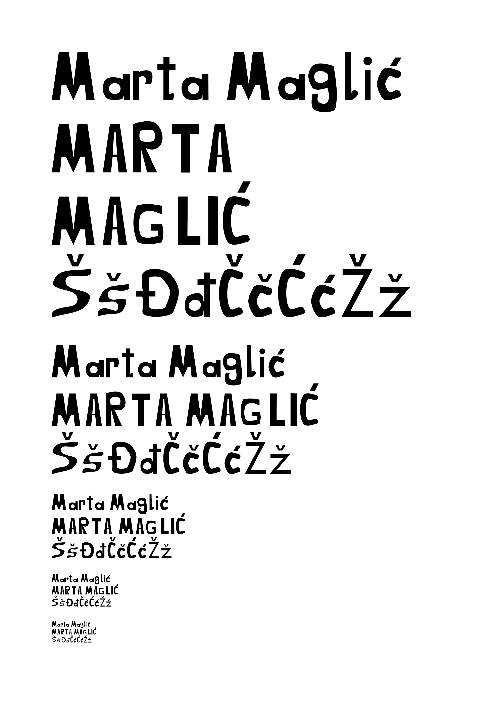
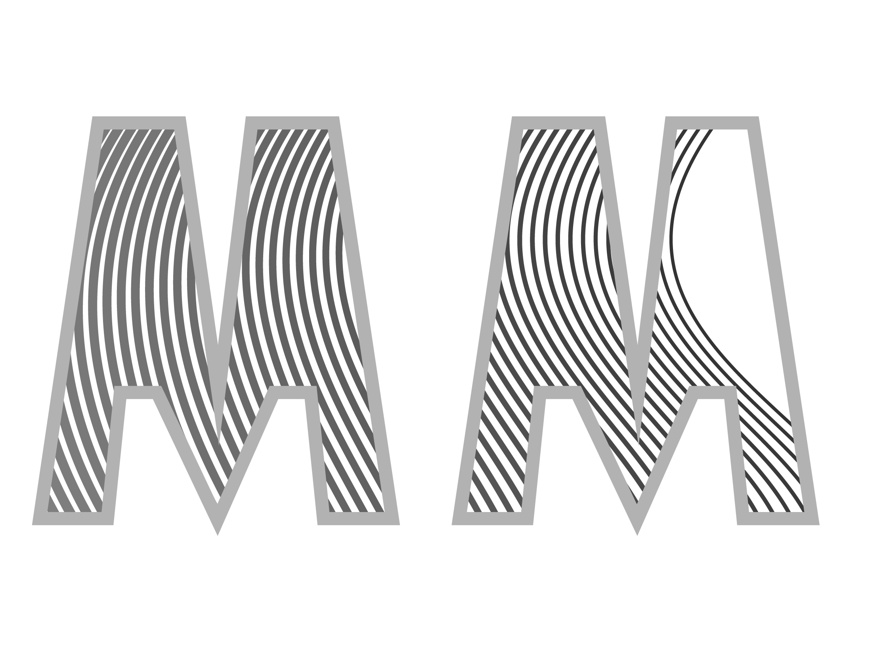
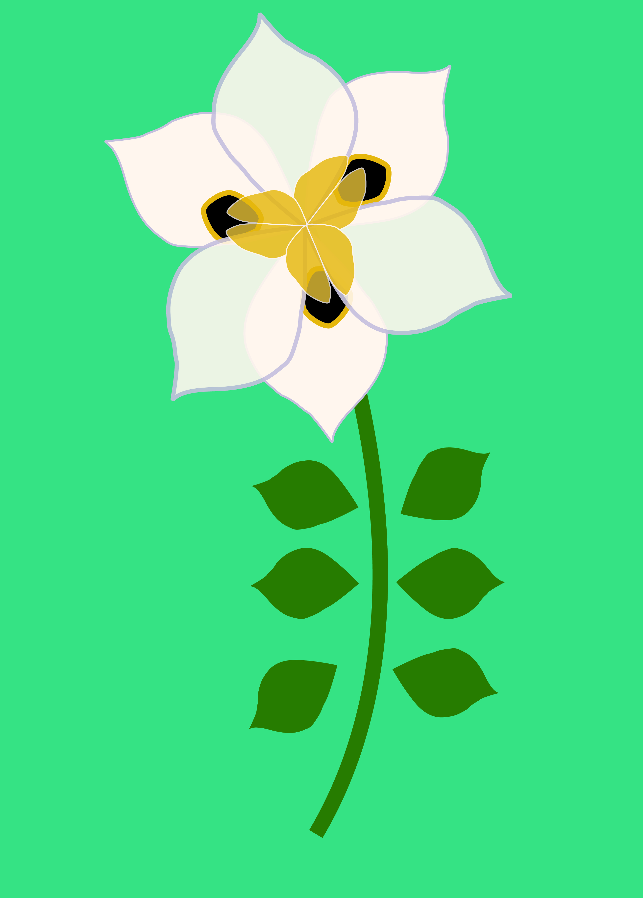
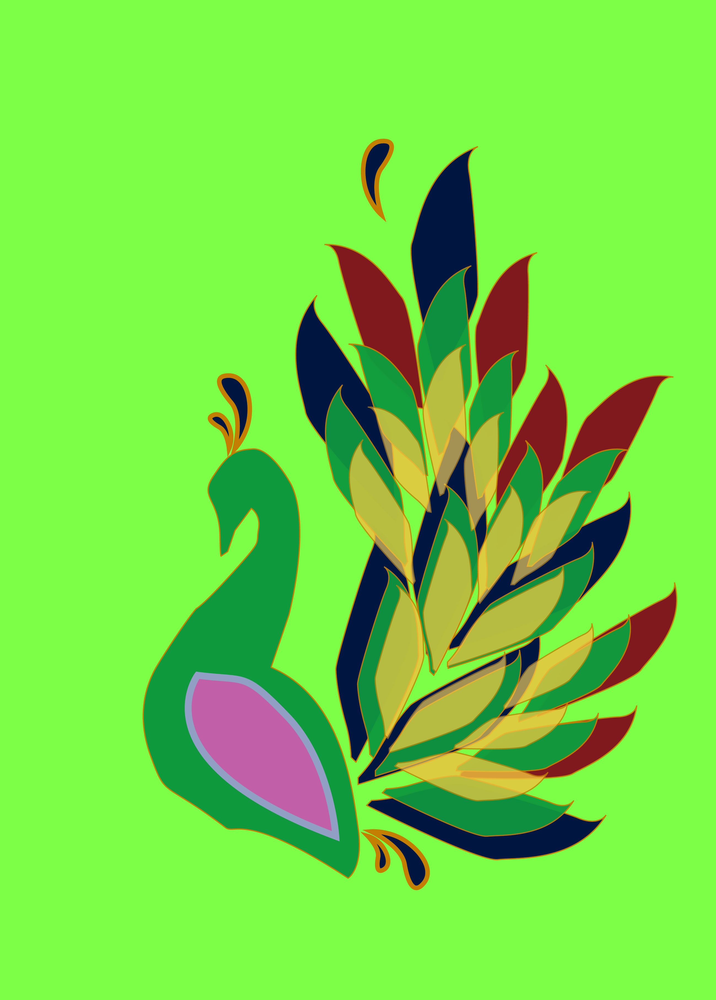
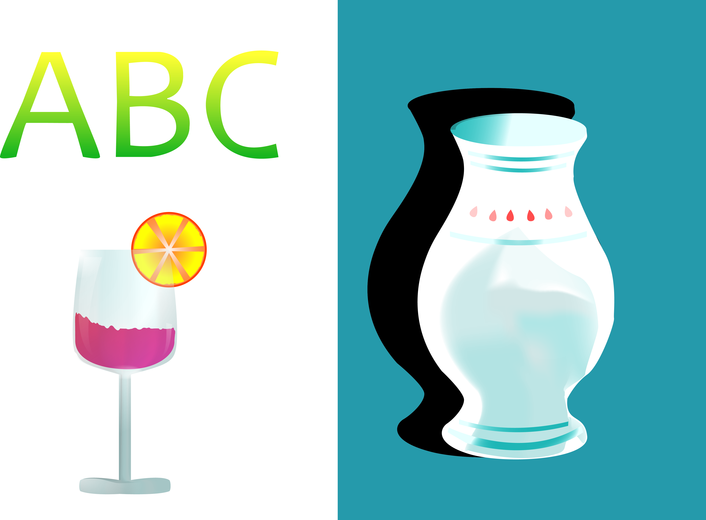
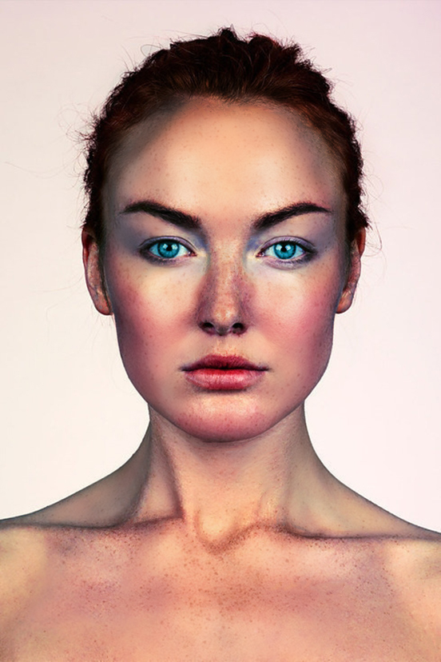
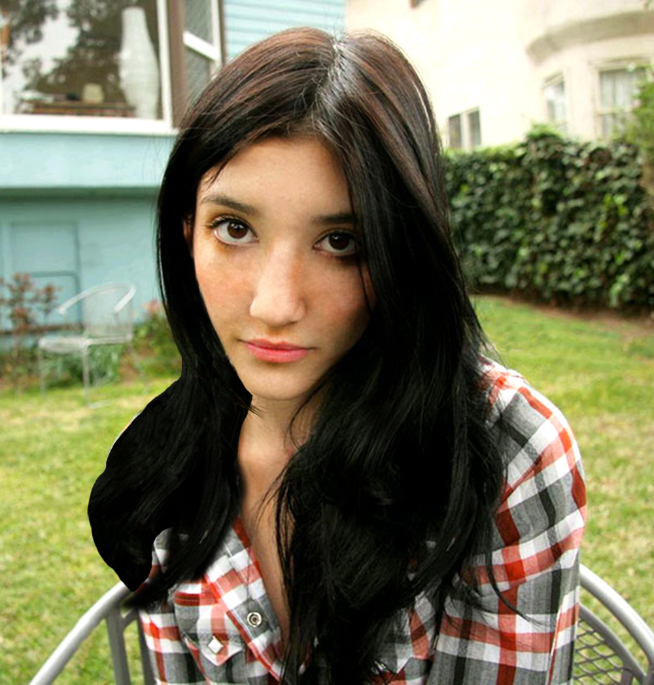
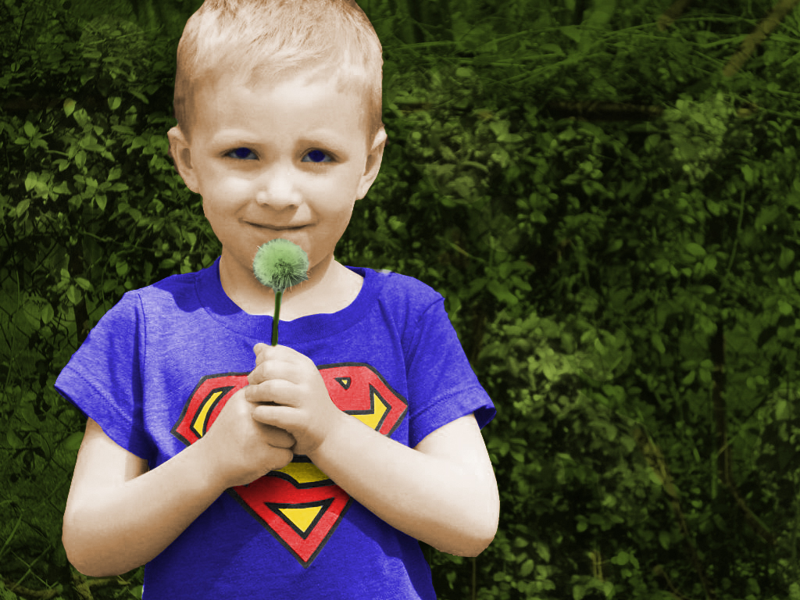
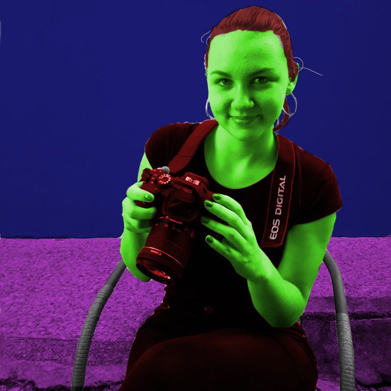
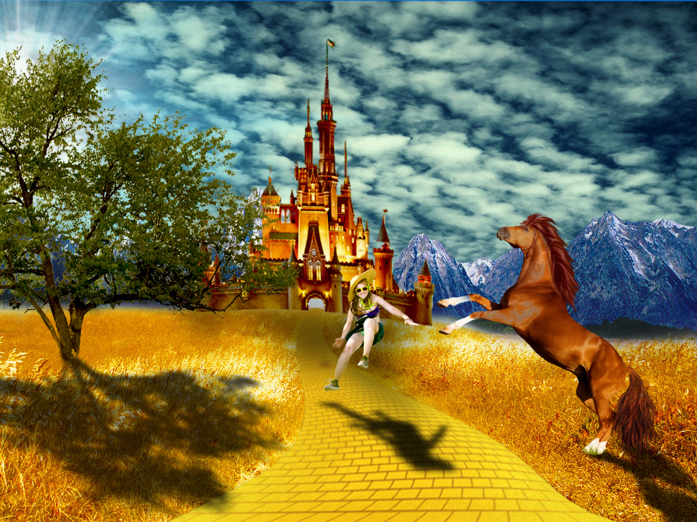

Prva vježba je izrada fonta u programima za izradu fonta, nakon izrade smo provjeravali radi li font u raznim programima poput Adobe Illustratora.
Druga vježba je crtanje Bezierovih krivulja u koordinatnom sustavu u Adobe Illustratoru
Treća vježba je crtanje oblika, njihovo multipliciranje, te obojenje. Jedan od primjera je cvijet, a drugi paun.
 U četvrtoj smo vježbi također u Adobe Illustratoru crtali složene objeke koji se sastoje od više staza, s tim da smo obojenja morali koristiti kao gradient.
Petu smo vježbu radili u Adobe Photoshopu gdje smo slike morali urediti i retuširati određenim alatima.
 U šestoj vježbi smo crno-bijele slike kolorirali.
 U sedmoj smo vježbi morali od skupine slika složiti jednu fotomontažu.
Osma vježba je izrada kinematografa to jest gifa iz videa.

Deveta i deseta vježba su izrada videa i html stranice koji su već uploadani pa se ne nalaze tu.
main page